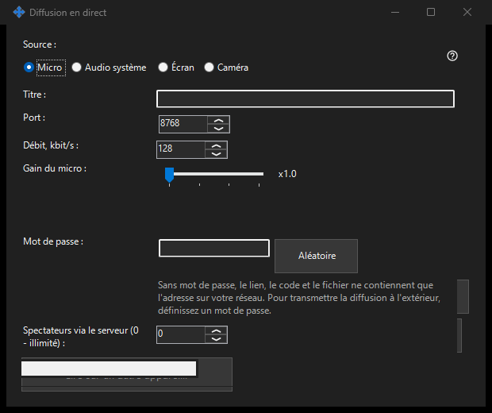

Diffusion en direct
Objectif
Partagez écran, fenêtre unique, caméra, microphone ou son système depuis Share Manager. Ouvrez un direct dans la visionneuse 64 bits via un lien, un code ou un fichier .fmsbcast. La capture commence uniquement avec Démarrer.


Dans cet ordre
Choisissez la source, puis écran ou fenêtre unique, ou caméra et mode. Avant Démarrer, vérifiez titre, mot de passe, audio et accès LAN. Les spectateurs reçoivent l'image et le son choisis, y compris les données privées visibles. Copiez le lien ou enregistrez .fmsbcast une fois en direct. Arrêter termine la session ; fermer la fenêtre capturée termine aussi sa diffusion.
Les éléments
Diffusion en direct
Choisissez la source, puis écran ou fenêtre unique, ou caméra et mode. Avant Démarrer, vérifiez titre, mot de passe, audio et accès LAN. Les spectateurs reçoivent l'image et le son choisis, y compris les données privées visibles. Copiez le lien ou enregistrez .fmsbcast une fois en direct. Arrêter termine la session ; fermer la fenêtre capturée termine aussi sa diffusion.
Paramètres du gestionnaire · Paramètres de partage SFTP · Paramètres du serveur d’échange